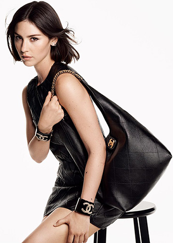
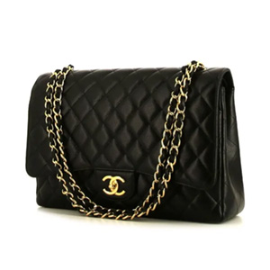
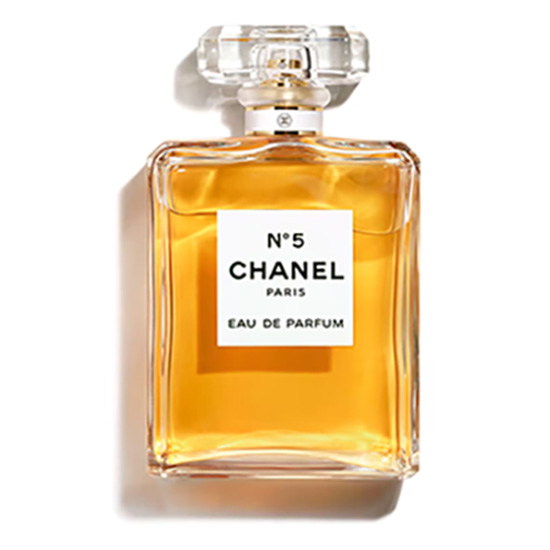
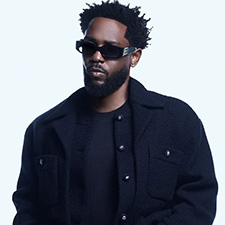

.jpg)

Gucci is a well-known luxury fashion brand that was founded in 1921 by Guccio Gucci in Florence, Italy. It started as a small shop selling high-quality leather goods, inspired by the elegant style of wealthy travelers that Guccio observed while working in hotels. Over time, Gucci grew into one of the most influential fashion houses in the world, known for its distinctive designs, craftsmanship, and iconic double-G logo. The brand has played a major role in shaping fashion by blending traditional Italian craftsmanship with bold, modern styles, often setting trends that influence other designers and popular culture. In recent years, Gucci has become especially known for its creative and sometimes unconventional designs, helping redefine what luxury fashion can look like and making it more expressive and individual.
Guccio Gucci was an Italian businessman and designer best known as the founder of the luxury fashion brand Gucci. He was born in 1881 in Florence, Italy, and is often remembered for his sharp eye for quality and style. Before starting his own business, Guccio worked in London at the famous Savoy Hotel, where he observed wealthy guests and their elegant luggage and fashion choices. This experience inspired him to create his own line of finely crafted leather goods when he returned to Florence. In 1921, he opened his first store, focusing on high-quality suitcases, handbags, and accessories that combined traditional Italian craftsmanship with a sense of sophistication and luxury. As his business grew, Guccio developed signature elements—such as the use of premium leather, attention to detail, and refined design—that would later become defining features of the Gucci brand. Despite facing challenges such as material shortages during wartime, he adapted by using alternative materials like canvas, which led to some of the brand’s most iconic designs. Guccio Gucci’s vision laid the foundation for what would become one of the most influential fashion houses in the world, and his legacy continues to shape the identity of Gucci today, with the brand still representing elegance, innovation, and status decades after his death in 1953.
Gucci plays a major role in today’s fashion industry as one of the most influential and recognizable luxury brands in the world. It is known for constantly pushing creative boundaries and redefining what high fashion can look like.Under recent creative direction, especially from designers like Alessandro Michele, Gucci has embraced bold colors, vintage-inspired looks, and gender-fluid styles, helping shift fashion toward more self-expression and individuality rather than strict rules. The brand often blends old and new ideas, combining its historic Italian craftsmanship with modern, sometimes unconventional designs that stand out on runways and social media. Gucci also plays a key role in setting global trends—what it showcases in its collections often influences other designers, fast fashion brands, and even streetwear. Beyond clothing, the brand has shaped how fashion connects with culture by collaborating with artists, celebrities, and other brands, making luxury fashion feel more relevant to younger generations.
In 2025, Gucci experienced a challenging year, with both its sales and profits falling significantly compared to previous years. The brand made about €6 billion in revenue, which was a drop of around 22%, showing that demand for its products had slowed down. This decline had a major impact on its parent company, Kering, because Gucci is its biggest and most important brand, so when Gucci underperforms, the whole company feels the effect. In addition to lower sales, Gucci’s profit margins also decreased, meaning the company was not only earning less money overall but also making less profit from each item it sold. These financial struggles were partly linked to changes in consumer tastes and increased competition in the luxury fashion market. Despite these setbacks, 2025 was seen as a transition period for Gucci, as the brand worked on refreshing its image, updating its designs, and making leadership changes in order to attract more customers and return to growth in the future.
Francesca Bellettini is the current CEO of Gucci, having taken on the role in 2025 during a challenging time for the brand. She is an experienced leader in the luxury fashion industry, with many years working within Gucci’s parent company, Kering, and previously serving as CEO of Saint Laurent. Bellettini is known for her strong business skills and her ability to grow and modernize fashion brands while keeping their identity intact. Her role at Gucci is especially important because the company has recently struggled with falling sales and changing trends, so she has been brought in to help turn things around and make the brand successful again. As CEO, she is responsible for making major decisions about Gucci’s strategy, including its designs, marketing, and global direction, while working closely with creative teams to ensure the brand stays relevant in today’s fashion world. Her leadership is seen as a key part of Gucci’s effort to rebuild its image, attract new customers, and return to growth in the future.
Gucci’s 2025 campaigns had **mixed success** for Gucci. Creatively, they were strong and helped keep the brand relevant, focusing on storytelling, individuality, and more natural, human-centered visuals. Campaigns like *“Where Light Finds Us”* and the Fall 2025 portrait series were praised for their artistic style and fresh approach. However, even though they gained attention and helped shape Gucci’s image, they did not lead to a major improvement in sales, as the brand still faced declining demand throughout the year. Some experimental ideas, like using AI in advertising, also sparked both interest and criticism. Overall, the campaigns were more successful in boosting creativity and brand image than in improving business performance.
The Fall/Winter 2025 *“Portrait Series”* campaign for Gucci was one of the brand’s most talked-about projects of the year. Instead of using traditional high-fashion styling, the campaign focused on photographing real people in a simple and natural way, showing a wide range of individuals to highlight personality and identity rather than just clothing. This approach made the campaign feel more personal and emotional, helping to show that fashion can be about self-expression as much as luxury. It was praised for its clean, minimal style and for refreshing Gucci’s image during a time when the brand was facing declining sales. While it did not dramatically boost profits, it was considered highly successful in terms of creativity and cultural impact, as it helped shift public perception of Gucci toward a more authentic and modern direction. The face of the campaign was actress and model Dakota Johnson.

.jpg)

